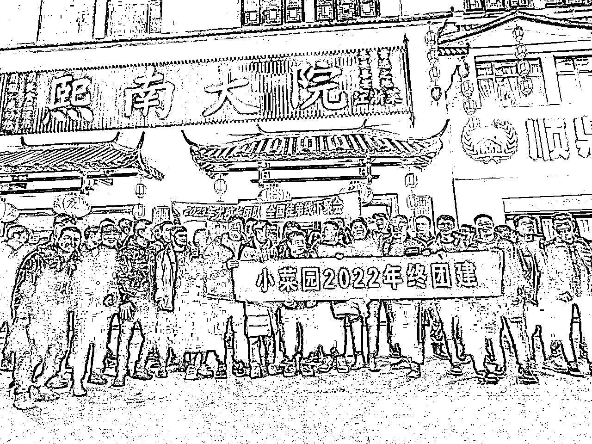
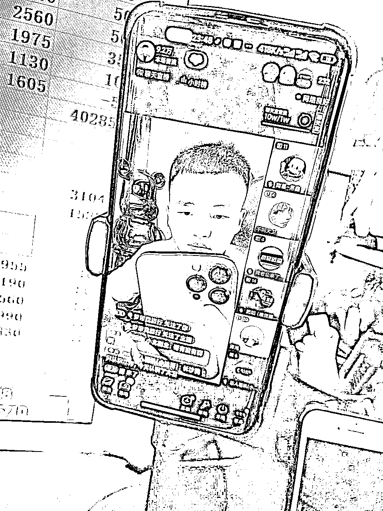
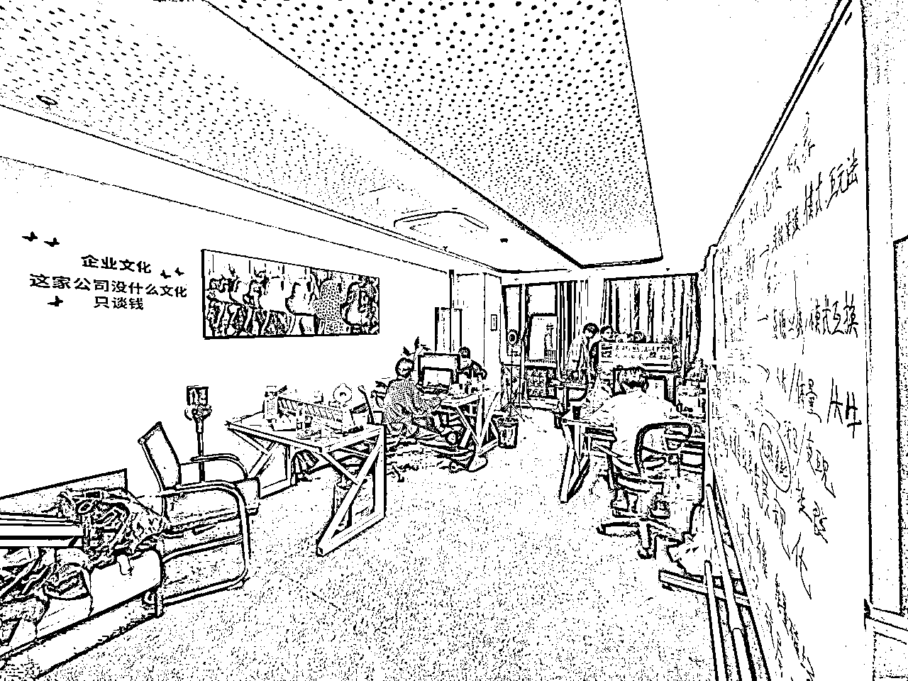
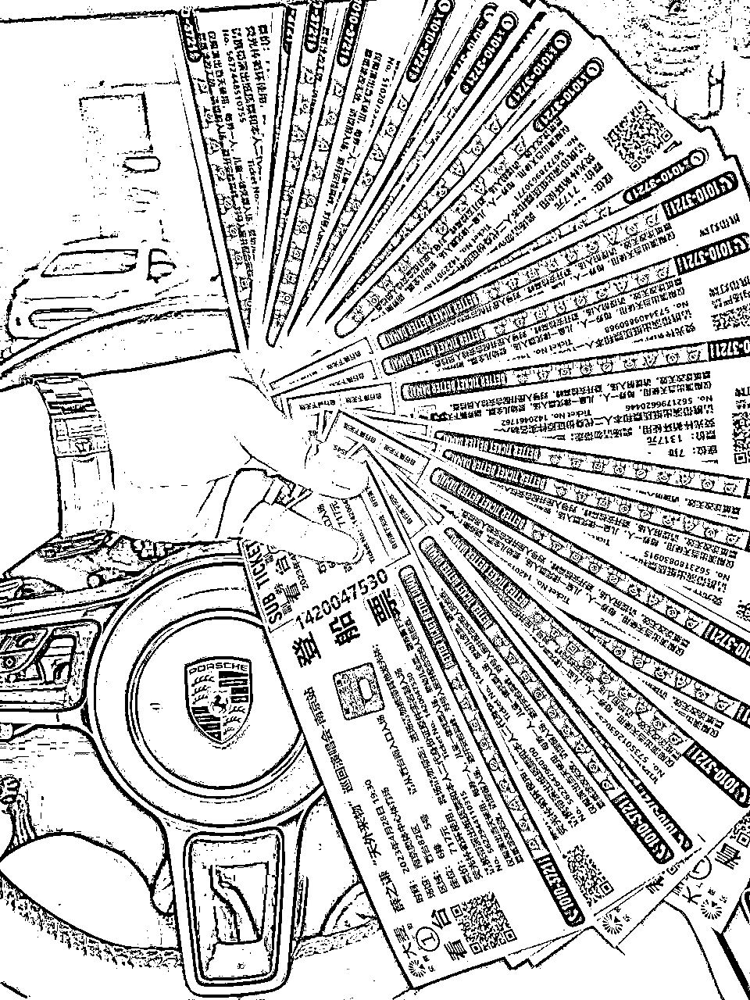
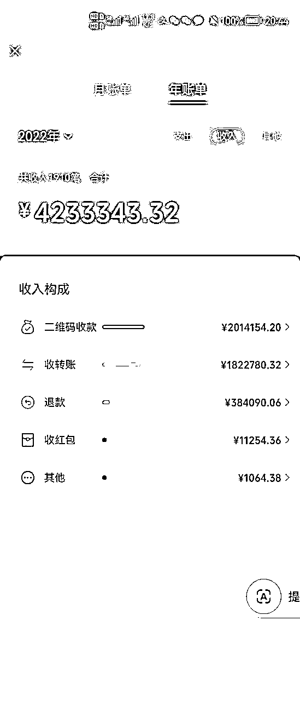
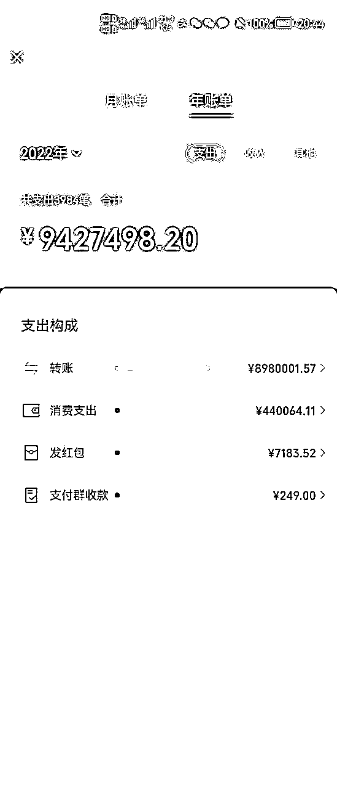
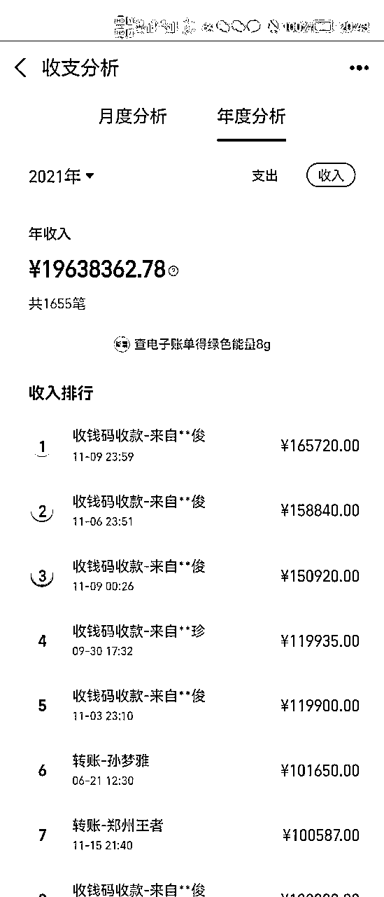
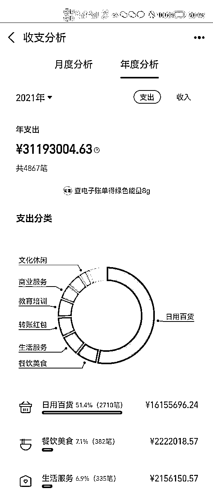

来源：https://pqk61b9yv25.feishu.cn/docx/D5j3dQ5sUox14qxU5FUc2w7vnLd
无干货不分享，大家好，我是尤校长。首先鸣谢@子白，他是我的好友，文笔形象俱佳，风趣幽默、仗义疏财。我本人太懒，没有他的督促和润色，圈友们大概率明年才能看到这篇文章。每年的双11都是撸货界的狂欢，也是最赚钱的时候，因此赶在双11前夕，让这篇帖子跟大家见面。我每年都看到圈外的同行收费招募抢手，有小白支付了高昂学费，却仍被圈养在信息茧房里，接触不到核心信息和玩法，今天我来分享点不一样的。
本人96年，农村小伙，初中毕业就自谋生路，这几年刷过盘子、当过服务员、打过螺丝。而现在，2023年11月，我的年收入已经突破80万，再经过一个双11，今年我的收入一定可以突破100万，感谢所有人！
2019年的时候，我沉迷网赌，把能套的钱全部输光，仍不知悔改去借网贷翻本。万幸征信太差，网贷没贷下来，不然翻身就是痴人说梦，即使这样，最后也欠下20万。
当时我在华为门店卖手机，一个月拿着4000元的工资，20万的负债压得我喘不过气。祸不单行，我幻想无数次要娶她，陪我度过无数艰难夜晚的女孩，最终也分了手。这让我濒临崩溃，我恨自己，甚至冒出轻生的想法。
好在我被社会毒打了多年，而且胆小，不敢一跳了之，最终醒悟。我本想着好好努力，工作几年应该可以翻身了。可是根本不够，每个月利息都要4500元，而我的工资才4000元，面对还款压力，我只能以卡还卡，拆东墙补西墙，负债不仅没有减少，反而在不断增加。
我不得不另谋出路，研究做副业，最开始了解的是APP下载拉新，每下一个软件就给几毛钱。于是店里没客户的时候，我就不停地下载注册，第一天我挣了12块钱，很开心，这是工资以外的第一份收入，但没有几天就放弃了，因为这点钱根本解决不了实际问题。
在我最难的时候，有个一起睡过桥洞的穷哥们，他一直用我的花呗/借呗/白条，借我的钱做流动资金。我有点奇怪，但也没多问，因为真的是好朋友，有时一起去买最便宜的啤酒，点2根羊肉串就能喝到半夜（烧烤老板眼睛能瞪出火星子），我就在力所能及的范围内帮助他。
直到半年后，我发现他用我的资金去撸茅台。2020年，贵州出了飞天茅台专项活动，从指定的出发地乘坐指定航班到茅台机场、贵阳机场、六盘水机场，即可凭身份证和机票在机场的茅台专卖店原价购买1499的飞天茅台2瓶，而且三个人可以拼箱，原箱的利润比散瓶高200左右。
我那个兄弟为了拼团买茅台，就组织人天天坐飞机。每隔几天，朋友圈就打卡一个城市。我很好奇：“兄弟怎么突然发财了？能不能带带我？等你回苏州请你喝3000块的茅台。”
他当时说的话，我记忆犹新，他说：“不太方便带你，而且茅台喝不惯了，这玩意天天见，天天喝，就那样。你的花呗我现在不需要了，还了吧。”
他曾和我一样，是最底层的人，在短时间内挣到了快钱，就极其膨胀。从那以后我对“苟富贵勿相忘”有了不一样的理解，而且我也告诫自己，即使上岸，也万万不可像他一般膨胀。
我的诚意打了水漂，心想：“不带我？没关系，求人不如求己，不蒸馒头争口气！”我开始分析他为什么挣到钱了？在于魄力，在于实践，他刚听说坐飞机买茅台可以挣钱，就买了机票，去飞了一遍，勇于试错，所以他拿到了结果。而我身背大额负债，今天不上班明天就要挨饿，我不敢请几天的假期，再买几千块的机票去赌不确定性。
我只能自己研究，好在撸货行业一直是半公开状态，大量的黄牛都通过网络招募抢手。我就通过百度、微信、QQ疯狂地搜索、加群，去了解信息，给别人当抢手，学习别人的聊天内容，那时候是真卑微，天天求大哥带带。
清楚记得当时下的第一件商品是拼多多的苹果11，64G，紫色。当时担心资金安全，自己在咸鱼上卖给了一个南通客户，挣了300块钱，瞬间打开我新世界的大门，我一天上班12个小时也挣不到300块呀！
我立刻就想到了放大，转型第一步，带动店员和同事下单，指导他们去抢茅台，每天化身人型闹钟，提醒他们抢天猫，京东，苏宁，国美的茅台，这样操作一个月下来，我能有个两千的额外收入。
但还是不行，靠运气吃饭，人数也太少，我想不靠运气每天也有收入。我想到了转线上，转型第二步，引流拉群，每天发线报，成员抢到了之后出给我，我中间赚差价，我本人抢到了就多挣点，抢不到依旧有收入。抢手越多，我的货就越多，收入跟人数线性相关。
我那时属于四手的收货佬，接触不到好的渠道，也不认识档口，拿着很韭菜的价格去收下面人的货。虽然我很韭菜，但大量的人比我更韭菜，这就是个信息差的行当，第一个月就有五千的额外收入。
收货做了四个月，每天收的货越来越多，对账是个大工作，每天都要向上级催款，向下级打款，占用大量的时间。当时我还在上班，每日晚9点下班，对账要搞到凌晨3点才能结束，多少有点累，有没有挣钱能再多一点的方法呢？
那么开搞，我转型的第三步，开始收徒收代理，俗称割韭菜，教他们收货，把我的渠道提供给他们，在这过程中大家互相学习，互相成长。此时是2021年5月份，第一个月我收了8个1588的徒弟和1个888的代理，都来自我的收货群。瞬间打开我新世界的大门：这玩意来钱快啊！那个月我赚了三万多。
此时我的副业收入已经超过主业了，而且6.18即将来临，我果断请辞，开始转型第四步，全职干这行。因为6.18的原因，整个六月份都很忙，每天大量接货，通宵对账，认真回答客户咨询，每天午后在群里发报价单，晚上催档口回款，我再打款给下面的客户，每天只睡4个小时，持续了半个多月。
2021年的618忙完后，我继续在出租屋里干着循环的工作，直到2022年2月，我有了成熟的收货团队，每天有稳定的货量，我的渠道从四手变三手再变二手，价格越来越硬。我从只做数码，拓展到演唱会门票、纪念币、潮鞋、美妆、黄金、茶叶、潮玩等等。渠道和产品越来越多，我的徒弟也发展到100多个人。
此时我的月收入至少有三万，我并不满足，开始行业转型第五步，2022年3月份我到河南郑州新天地通讯市场，租下一间铺面，自己做一手的档口，进货招人，拓展档口的同行资源和渠道。
我一开始以为开档口很挣钱，每天那么多货，哪怕一台挣10块，也能靠量挣钱，我一万多人的私域，体量这么大，还挣不到钱吗？但实际问题有三：
1、开档口的成本很高：租金、物业费、水电费、物流费，以及两名员工一个月12000的工资。
2、一手档口的货流动性差，需要自己卖货，要看大盘行情，价格低会流失客户，价格高了，自己的渠道不够硬，最终货都被同行割来割去，不挣钱。
3、人才问题，我的业务员只擅长卖苹果手机，导致我的其他产品没有价格优势。我招不到懂撸货的专业财务，经常错账，还会账实不符。
我很快就止损了，并于2023年2月关闭门面来南京发展。我选择做自己擅长的事情，也就是前端。我目前在做抖音，做私域，做行业培训。不谦虚地说，我是行业培训第一人，之前吸纳成员的方式都叫收徒，很多优秀的同行碍于面子不便加入。所以更名叫私董会之后，大量的同行和老板来向我们付费。且私董会支持分销，你分销赚70%，我来交付，统一进行系统培训，分享所有线报，推送所有渠道，去亲自教他。目前在行业内，尤校长ip的势能已有一定知名度，影响到很多人。
我在行业织了两张网，一张货网，一张信息网，我私董会有1000多人，他们都是我的社交节点，徒弟再招徒弟，私域再拉私域，这张网越来越大，越来越密，所有的货和信息最后都汇聚到我这里。而且别人交钱向我学习的时候，我也在学习他们的优势，每个人自带的资源都不一样，我了解了上千人对行业的认知，不断地反向充电。我只需要把网维护好，就是带大家共同富裕的赚钱机器。
插播当初启发我转型的故事：
一个普通的气球，能有几种卖法？
第一层：把成本5毛的气球卖1块，相当于直接卖原材料，中间利润多少钱？ 5毛。
第二层：把气球吹起来卖2块，相当于卖成品。中间利润多少钱？1块5。
第三层：把气球编成小狗，书包，娃娃的模样，产品有了点缀有了包装，一个能卖10块，利润9块5。
那你想挣多一点，怎么办？升级！
第四层：提升一下效率，一个人专门负责编，一个负责卖，产品和工作效率提升了，利润自然翻倍。
第五层：扩大规模，粘贴复制。招十个人专门负责销售，在各个学校门口进行摆摊销售。团队得到扩大，业务量得到提升，利润自然放大N倍。
那你不满足，还想挣的再多一点，怎么办？没错，继续升级。
第六层：把你卖气球的这套模式和拿到的结果，包装成课程，卖到全国，卖教学远比你卖气球挣得多的多，以前你是卖气球，现在是卖项目。
第七层：你已经拿到结果了，既然能搞教学那能不能收徒？能收徒那能不能搞加盟？搞连锁、做产品供应商，说不定能上市。（这个饼有点大，兄弟们帮忙啃几口）
都是卖气球，为什么拿到的结果不一样呢？对这个问题的反复思考，启发了当时还在搬砖的我，指引我一步步地转型。
故事讲完了，给大家分享点纯干货：
一般地，抢手会通过实时的抢购链接（行业内称为线报）进行下单购买，以低于流通市场的价格把它买到手。
随后把产品卖给收货的上游（档口），中间的差价就是你的利润。整个过程就称为撸货！
简单吧，就是因为够简单才会成为全民搬砖项目。有些溢价较高的产品，一般就需要抢，溢价越高就越难抢。比如53度飞天茅台、大益茶或热门电脑，普通人很难抢到，所以我们也会寻求科技加持，但不能使用非法软件。
我们撸货的产品主要有：门票，茅台，数码，鞋子，戴森，黄金，茶叶，电脑，美妆，纪念币，任天堂,PS5，微软XBOX，潮玩。绝大多数都是硬通货，有专门的渠道回收。
我们撸货的平台主要有：淘宝，京东，拼多多，抖音，快手，苏宁易购，网易有品，小米有品，酒仙，唯品会，贵旅优品，贵高速，机场云商等。大多是大型电商平台，支持七天无理由退货，有时行情波动大，导致撸货的产品亏损（行业内称为反撸），这时我们就可以申请退货退款，避免损失。
行业内有一句经典名言：合格的黄牛向来先冲，剩下的交给七天无理由！
风险性：很多人把撸货当做刷单或薅羊毛，其实不然，撸货是实物购买，和你正常网购一样，他是绿色的，并不利用平台的漏洞去薅羊毛。
以上内容是给小白看的，是行业的初级教程。
如果你付费进圈子，结果只是给别人抢货，那你只是别人的抢手，而我要分享的是行业的核心玩法。
人头：现在都是三码合一，所以必须掌握大量的人头。如果你掌握学生资源，那可太棒了，学生的人头是取之不尽的：大四走了大一又来，一直循环。个别在校生选择撸货创业，就专门利用学生人头，大量组织下单，一年仅通过拼多多、抖音、快手的百亿补贴就可以年入200万。
核心玩法就是人海战术、无脑下单，人头越多、几率越大，砍单了换一批人继续下。有人头你还可以做返利，像6.18、双11、双12这种电商节，光靠返利也能赚的盆满钵满。
线报：有了核心线报，你可以直接卖线报群，例如收费45一个月。有时你让别人一次性交大几百进线报群，有效期一年或是终身。即使性价比很高，很多人也是心里打怵的，但你如果降低门槛，让他花一包烟钱去进线报群，很多人还是乐意付费的，毕竟试错的成本不高。但凡群里有一条有用的线报，他挣到的肯定是N个45块钱。所以只要你的线报群每天坚持发，一直维护，用户大都会续费，或者按年交费。
渠道：当你掌握了核心的渠道，你就可以凭借渠道优势去收货，做一个中间商赚差价。让你的抢手出货给你，转寄给档口，到货后档口给你打款，你再给抢手回款，无需垫资。又或者你掌握了一手的科技渠道也可以对外收费，或者帮别人代抢，中间赚差价。
资金：如果你的现金流十分充足，那你的优势很明显，很多事都可以拿钱铺路，比如上述三点，你都可以花钱搞定。别人618的时候本金只有10万，那他只能下10万的货，等回款后才能再次下单，如果是100万就基本没有这个问题。当然，现实你一个人是下不了100万的货的，但你可以找有人头的黄牛合作，你提供资金垫付，谈利润分成就可以了。当某产品行情看涨的时候，你直接花现金收货，钱多收的就多、挣得自然就多。有资金的好处太多，不一一例举了。
撸货的几种赚钱模式：
一、抢手
1、通过他人提供的链接（业内称为线报）下单，有时需叠加多种手段降低成本，如平台券、VIP折扣、百亿补贴等，最终目的是以低于公开市场的价格买到产品。今年的演唱会门票，大都存在溢价，抢到即可。
2、把买到的产品以市场价卖给黄牛或档口，即完成了一次低买高卖，赚到了利润，这个过程就称为撸货。
3、拉人头无限复制，圈养自己的抢手，按照你的线报抢购，统一出货给你，你支付佣金。被圈养的抢手，信息是封闭的，不知道行情，渠道和信息掌握在你手里，给多少佣金也取决于你，只要你的抢手多，那利润就多。
4、掌握大量学生信息的学生头子有不少靠这种模式发家，且大多数黄牛都是这种模式。
二、中间商
1、你是中间商，掌握核心渠道，有足够的价格优势，挣收货的差价。且不占用资金，你出货给上游档口，档口给你结账后，你再给下游结账，每天需要大量时间去对账打款。主要靠量挣钱，单件的利润不高，美妆3-5元，手机10-20元。
2、主要通过线上引流，抢客户挖墙脚，吃圈子流量。引流过来的都是精准粉，包括成熟的抢手及小团队。你需要在群里提供线报，每天更新产品的行情，只要你收的货越多，就越挣钱。在业内是比普通黄牛稍高级的角色，能接触到很多优秀的同行。
三、档口
1、你就是该品类的一手，在流通市场收货，兼营C端零售批发，实体店铺等等，体量越大越挣钱，渠道越硬收货的价格越低，出货的价格越高。
2、档口的货最终流向有三，分别是：商家、抢手、终端消费者。电商平台的店家往往既是商家也是档口，抢手去平台下单卖给档口，档口再供给平台商家，这样循环。我们常遇到同一件产品被二次撸货甚至三次撸货再回到我们手里。
3、这个产业链上，黄牛和抢手挣的是商家的钱，商家挣的是平台补贴的钱，平台搞补贴带来大量的真实销售，股价也会涨，最终挣的是客户和投资者的钱。
四、同行扒皮
1、通过信息差进行提篮子（扒皮），业内有无数个贸易群，各贸易群里随时有不同的供求信息，你只需要把1群的低价供给链接给2群的高价收购，靠价格差就能挣钱。
2、实际操作很难，本行业存在圈层划分，想进到高级的贸易群，不仅自身实力要过硬，还需要前辈帮你担保，所以想拿到上层的门票需要花高价或大量的时间精力。
五、合伙人
1、租一间办公室，对外招募10个合伙人，单价3万/年，你过来跟我一起干，期间我保证你挣钱，如果没挣到钱，一年之后全额退款。我完全教会你，资源渠道与你共享。
2、我指导你复制我的成长路经，本行业的商业模式很简单，1年以内一定出师，此时你已经积累了自己的人脉、渠道、资源。我支持你单干，也可以留下继续合作，资源仍然共享，彼此借势互利共赢。
3、此方法变现快，前期直接30万到账，且拥有10个免费劳动力，不用发工资，帮你分担很多的工作量。直接拥有了一个团队，比单干强大的多。
4、合伙人成长起来后，就是十个人对行业的深度认知，三个臭皮匠顶个诸葛亮，这足足有三个诸葛亮，可以碰撞出无限可能。
六、知识付费
1、利用手里的信息差（线报或渠道），以及对行业从上到下的理解，用流量变现。撸货这个项目简单易操作，有很多小白想当个副业赚外快。本行业虽然已经出现内卷，但还是有不少圈外人没有尝试过。这时就可以：收徒、收代理、卖渠道、卖线报、卖科技，每项服务都有人专职卖。
2、举个例子，假如你有一手线报，那就可以建有效期一个月的线报群，每人收费50。在没有信任基础的情况下，让人交888进一个一年的线报群，很多人是不愿意的，但如果花一包烟钱去短期线报群，大家还是乐意付费的，毕竟试错成本低，只要抓到任意一条线报，他挣到都是N个50块。尝到甜头后，大多数人都会选择续费或付更高客单。
3、我成立私董会的愿景是：让成员不局限于黄牛，要做一个懂商业的聪明人，成为行业领跑者。刚开始不叫私董会，还叫收徒弟，可是一些年入千万的行业大牛碍于面子不便加入，心想：“我挣得比你多的多，还要给你当徒弟？”所以更名叫私董会以后，短时间内大量的同行和档口都来申请入会，目前规模已经达到1000人，除了西藏，成员遍布全国。目前在行业内，尤校长IP的势能已经初具规模，每天会有人主动找上门，这就是做IP的好处。
票务的几种赚钱模式：
一、抢票
1、热门的演唱会都会提前官宣，只需要准时抢购就可。优先抢连坐和内场，单机和看台的利润稍低。
2、抢到门票后，可以立马转手卖掉，一般开售几分钟后就会有人收购。如果不想卖，也可以留在手里赌行情上涨，比如周杰伦、张学友、林俊杰等一线大牌，门票价格一般会逐步上涨，直到临开场前一天。
3、与撸货同样，可以拉人头无限复制，圈养抢手。被圈养的抢手，不知道行情，渠道掌握在你手里，给多少佣金也取决于你，只要你的抢手多，那利润就多。
二、卖票
1、怎么卖？假设我是周杰伦的铁杆粉丝，当我在大麦APP上没有抢到的时候，我还是想去看，那我从哪买票？钓鱼之前先要知道鱼吃什么饵：一般客户卖票的渠道无非就是咸鱼，摩天轮，小红书，抖音，粉丝群，微博等等。
2、这时我们就去对应的平台发布卖票的帖子就会有人咨询买票，当客户咨询买票的时候我们只要给出对应报价就可以了，争取中间的差价。
3、那我们的票从哪里获取？ 只需要从同行群里配单就可以了，行业称之为配票，也可以从配票网站上进行配票给到客户。
三、代抢,
四、中间商
1、接不到客户的黄牛直接转发上述的一手信息，以3000的佣金让抢手们去抢，挣1000一张，当个中间商，这是极为常见的。
2、这就是倒一手信息差，很多黄牛对行情的把握各不相同。总之就是上层割下层，内行割外行，信息差永远存在！
五、私域卖票
热衷演唱会的客户没有穷屌丝，大都是中高端女性客户，购买力强，复购率高，转介绍率极高。所以这个行业只要坚持一年，把客户维护好，光积累下的私域客户就足够你每年的收入了。
六、票务代理
招票务代理，收取门槛费用后，培训代理们如何引流，如何抢票。当你代理足够多的时候，就实现躺赚了，你团队的每一张票卖出去都来找你配票，每一单你都有差价。
给大家做个思维导图，直观明了！
最后说说我的一些感触：
1、我在深入撸货行业的同时，发现优秀的人都在生财有术，从而被吸引加入，我的本能让我趋于高级。你在市面上能看到的所有项目，在生财都有先驱者告诉你答案，结果就摆在那，只要你肯加入，肯模仿，肯复制，最终总能超越，心法就是抄=超=钞！
2、以上所有模式我都做过，这是一个进阶的过程。不谦虚地说，我目前是行业培训第一人。我自认为对本行业有深入的理解，从业虽然只有两年多，但因为我敢打敢拼，拿到了比较大的结果，大部分做了5年以上的同行都抱着小富即安的心态，拿到的结果还略逊于我。
3、网上常说，带你赚钱的人都是想赚你的钱，我对这句话很认可，但应该还有另一个答案：那就是他想让你帮他赚钱，聪明的老板为了可持续发展，势必会利润分成，甚至将大部分利润让给你，帮你拿到结果，通过你的社交节点再次裂变，自身的势能只增不减。
4、本行业有很多小白，他们想真正进入到这个行业，了解核心玩法，但在成长的过程中一定会踩很多坑，即使花费大量的时间钻研，也很难拿到结果。原因在于大部分黄牛们故步自封，小富即安，小农思维很强。他们为了不影响既得利益，凭借对渠道的把控，给下级制定规则，不允许新人得到发展。
5、前几年，如果想进入本行业，那么至少要付个几万去拜山头。我在高价拜了足够多的山头后，积累了自己的资源，转型成打破规则的那个人。我认为垄断不是良性的，良性的生态应该要帮助到更多人，而非所有的核心资源都掌握在一小撮人手中，只允许他们制定规则。行业要有竞争，才能向前走，竞争对手也是良师益友，他会促使你变得更优秀。
6、要有流量意识，要做好私域。我认为不断地做大流量入口，不断地攒私域，就相当于往银行卡里存钱，当你需要取钱的时候，项目就是取款密码。这个密码可以是撸货，可以是多多视频，也可以是视频号带货，不胜枚举。所以我一直在抖音坚持做垂类直播，我在想中国15亿人，抖音用户8亿，日活2亿，还有无数人是不了解这个行业，甚至想尝试这个行业的，我能不能作为突破口，从他们身上挣钱？
7、我觉得做事一定要做鹤立鸡群的那个，人海太拥挤，如果你不够突出，别人根本看不到你，你就很难遇到贵人。如果是我，我也只会去找行业拔尖的人合作。
给大家送点福利：行业机密的核心代理方案，详见下文。
给大家一点直观的感受，看一下我2021年刚做撸货这行的收益情况，那个时候因为口罩问题还没有票务，上视频！







